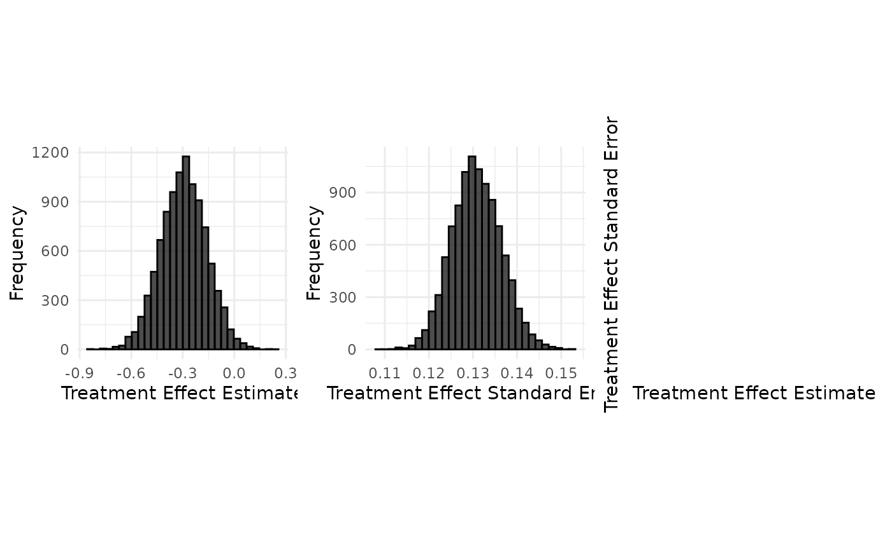
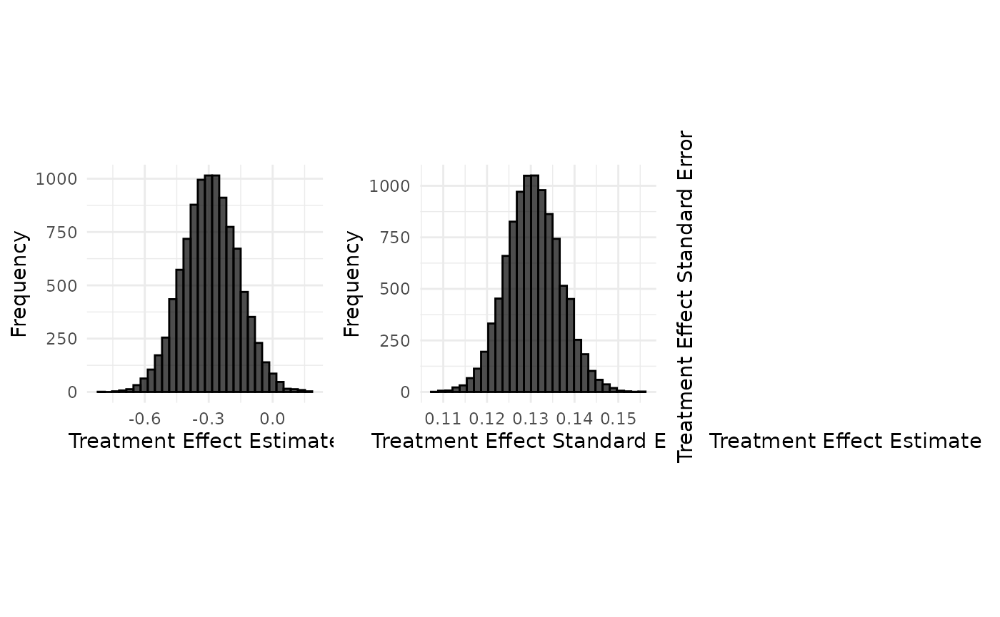

Data Generation : Mepolizumab case study (recurrent event endpoint)
Tristan Fauvel
2026-09-11
Source:vignettes/data_generation/Data_generation_mepolizumab.Rmd
Data_generation_mepolizumab.RmdMepolizumab case study
The data comes from Ortega et al (2014), which contains data for the placebo, Mepolizumab SC and Mepolizumab IV group (adults and adolescents are pooled)
Adolescent group : Number of control patients : 9 (see page 95 of the EPAR) Number of treatment: 16 IV and SC, (see page 95 of the EPAR) Total number of patients: 25
According to Best et al (2021), the log(RR) in adolescents is -0.40 (0.67 on the raw scale) with standard error 0.703.
Adults : Number of control patients: 182 (191 - 9 = 182) Number of
treatment patients: 369 (385 - 16 = 369) Total number of patients:
551
According to Best
et al (2021), the log(RR) in adults is -0.69 (0.50 on the raw
scale), with standard error 0.13 (sqrt(0.017))
For the rate in the adult control group, we use the data from Ortega et al (2014) (which include both adults and paediatric patients), assuming that the placebo rate is the same between the adults and the adolescents (or that the effect of the paediatric subgroup in the overall rate computation is negligible). So, the rate in the control group in adults is 1.74, and the rate in the treatment group chosen so as to be consistent with the control rate, that is 0.87 (= 0.50*1.74).
set.seed(42)
config_path <- system.file("conf/case_studies/mepolizumab.yml", package = "RBExT")
case_study_config <- yaml::yaml.load_file(config_path)
format_case_study_config(case_study_config)| Parameter | Value |
|---|---|
| General | |
| Name | Mepolizumab |
| Control | Placebo |
| Summary Measure Likelihood | normal |
| Theta 0 | 0 |
| Endpoint | recurrent_event |
| Null Space | right |
| Sampling Approximation | FALSE |
| Target | |
| Control | 9 |
| Treatment | 16 |
| Total | 25 |
| Treatment Effect | -0.395 |
| Standard Error | 0.703 |
| Source | |
| Control | 182 |
| Treatment | 369 |
| Total | 551 |
| Treatment Effect | -0.693147180559945 |
| Standard Error | 0.130384048104053 |
Initializing a RecurrentEventTargetData object with a normal treatment effect summary measure distribution
Usage
source_data <- SourceData$new(case_study_config)
drift <- 0.4
target_sample_size_per_arm <- 225
target_data <- TargetDataFactory$new()
target_data <- target_data$create(source_data = source_data, case_study_config = case_study_config, target_sample_size_per_arm = target_sample_size_per_arm, treatment_drift = drift, summary_measure_likelihood = source_data$summary_measure_likelihood)When initializing a RecurrentEventTargetData object, we start by computing the rate in each arm based on the drift in each arm (by default, the drift between control arms, or control drift, is 0)
read_function_code(rate_from_drift_logRR)## rate_from_drift_logRR <- function (arm_drift, source_rate)
## {
## return(source_rate * exp(arm_drift))
## }
control_drift <- 0
treatment_drift <- drift + control_drift
target_data$control_rate <- rate_from_drift_logRR(control_drift, source_data$control_rate)
target_data$treatment_rate <- rate_from_drift_logRR(treatment_drift, source_data$treatment_rate)
target_data$treatment_effect <- target_data$drift + source_data$treatment_effect_estimateWe then compute the standard deviation of the logRR. Importantly, we want to be able to introduce change in source study control rate and compute the corresponding logRR.
For a negative binomial distribution, the mean and the variance are given by: Where is the number of successes and is the probability of success in each trial.
The standard error of the mean is :
The negative binomial distribution can be parameterized in different ways, but a common parameterization involves the mean and the dispersion parameter . The mean is the expected number of failures before achieving successes.
For this parameterization, the mean and variance are related as follows:
The variance is given by:
We can express the variance in terms of and . From the mean equation, we can solve for :
Substituting back into the variance equation:
Therefore, the standard deviation of a negative binomial distribution with mean and size parameter is:
Moreover, using the delta method, the standard error of the log event rate ratio is approximated as:
So that :
mu_treatment <- target_data$treatment_rate # Mean of the first rate
mu_control <- target_data$control_rate # Mean of the second rate
k_treatment <- 0.8 # Size parameter of the first negative binomial distribution
k_control <- 0.8 # Size parameter of the second negative binomial distribution
n_treatment <- target_data$sample_size_per_arm # Sample size for the first rate
n_control <- target_data$sample_size_per_arm # Sample size for the second rate
# Compute the standard deviations for the negative binomial distributions
sigma_treatment <- sqrt(mu_treatment + (mu_treatment^2 / k_treatment))
sigma_control <- sqrt(mu_control + (mu_control^2 / k_control))
# Compute the standard errors of the rates
SE_R_treatment <- sigma_treatment / sqrt(n_treatment)
SE_R_control <- sigma_control / sqrt(n_control)
target_data$standard_deviation <- sqrt(target_data$sample_size_per_arm) * sqrt((SE_R_treatment / mu_treatment)^
2 + (SE_R_control / mu_control)^2)
# Compute the SE of the log rate ratio
SE_log_rate_ratio <- target_data$standard_deviation / sqrt(target_data$sample_size_per_arm)
cat("The standard error of the log rate ratio is:", SE_log_rate_ratio, "\n")## The standard error of the log rate ratio is: 0.1307278To be compared with the SE from Ortega et al (2014), which is 0.130.
We compare this result with the SE obtained by simulation:
n_replicates <- 10000
log_rate_ratios <- numeric(n_replicates)
se_log_rate_ratios <- numeric(n_replicates)
for (i in 1:n_replicates) {
# Generate the patient-level data by sampling from negative binomial distributions
source_data_control <- rnbinom(n_control, size = 1 / k_control, mu = mu_control)
source_data_treatment <- rnbinom(n_treatment, size = 1 / k_treatment, mu = mu_treatment)
treatment <- negative_binomial_regression(source_data_treatment)
control <- negative_binomial_regression(source_data_control)
log_rate_ratio <- log(treatment$rate_estimate) - log(control$rate_estimate)
# Calculate the SE of the log rate ratio
log_rate_ratios[i] <- log_rate_ratio
se_log_rate_ratios[i] <- sqrt(treatment$se_log_rate^2 + control$se_log_rate^2)
}
cat("The standard error on the log rate ratio is:", sd(log_rate_ratios), "\n")## The standard error on the log rate ratio is: 0.115474## The average standard error of the log rate ratio is: 0.1144169## The average log(rate ratio) is: -0.2919627The average is to be compared with the treatment effect from Ortega et al (2014), which is -0.69.
Aggregate data generation
Generation of aggregate data without sampling approximation
Usage
case_study_config$sampling_approximation <- FALSE
target_data <- TargetDataFactory$new()
target_data <- target_data$create(source_data = source_data, case_study_config = case_study_config, target_sample_size_per_arm = target_sample_size_per_arm, treatment_drift = drift, summary_measure_likelihood = source_data$summary_measure_likelihood)
n_replicates <- 10000
data <- target_data$generate(n_replicates = n_replicates)
print(data[1:10,])## treatment_effect_estimate treatment_effect_standard_error
## 1 -0.46093219 0.1293199
## 2 -0.29997371 0.1351528
## 3 -0.33161786 0.1240594
## 4 -0.33881142 0.1380817
## 5 -0.27443685 0.1236433
## 6 -0.38250337 0.1271288
## 7 -0.51374108 0.1226020
## 8 -0.07955263 0.1228146
## 9 -0.31203110 0.1315100
## 10 -0.23508609 0.1290851
## sample_size_per_arm standard_deviation
## 1 225 1.939798
## 2 225 2.027292
## 3 225 1.860890
## 4 225 2.071226
## 5 225 1.854649
## 6 225 1.906932
## 7 225 1.839030
## 8 225 1.842220
## 9 225 1.972650
## 10 225 1.936277
target_data$plot_sample(data)
### Implementation detailsThe original study used a negative binomial regression, so we do the same by sampling IPD from a negative binomial distribution, then estimating the parameters of this negative binomial distribution from the data.
Note that we use a inverse size parameter of 0.8, as in Ortega et al (2014).
size <- 1 / 0.8 # size parameter
treatment_rate <- target_data$treatment_rate
control_rate <- target_data$control_rate
# Vector to store log rate ratios
log_rate_ratios <- numeric(n_replicates)
se_log_rate_ratios <- numeric(n_replicates)
for (i in 1:n_replicates) {
# Generate the patient-level data by sampling from negative binomial distributions
target_data_control <- rnbinom(target_data$sample_size_per_arm,
size = size,
mu = control_rate
)
target_data_treatment <- rnbinom(target_data$sample_size_per_arm,
size = size,
mu = treatment_rate
)
treatment <- negative_binomial_regression(input_data = target_data_treatment)
control <- negative_binomial_regression(input_data = target_data_control)
log_rate_ratio <- log(treatment$rate_estimate) - log(control$rate_estimate)
# Calculate the SE of the rate ratio using the delta method
se_log_rate_ratio <- sqrt(treatment$se_log_rate^2 + control$se_log_rate^
2)
log_rate_ratios[i] <- log_rate_ratio
se_log_rate_ratios[i] <- se_log_rate_ratio
}
samples <- data.frame(
treatment_effect_estimate = log_rate_ratios,
treatment_effect_standard_error = se_log_rate_ratios,
sample_size_per_arm = target_data$sample_size_per_arm
)Generation of aggregate data with sampling approximation
Usage
case_study_config$sampling_approximation <- TRUE
target_data <- TargetDataFactory$new()
target_data <- target_data$create(source_data = source_data, case_study_config = case_study_config, target_sample_size_per_arm = target_sample_size_per_arm, treatment_drift = drift, summary_measure_likelihood = source_data$summary_measure_likelihood)
n_replicates <- 10000
data <- target_data$generate(n_replicates = n_replicates)
print(data[1:10,])## treatment_effect_estimate treatment_effect_standard_error
## 1 -0.38234896 0.1280325
## 2 -0.25046205 0.1315686
## 3 -0.43659426 0.1330680
## 4 -0.30390388 0.1327693
## 5 -0.19716041 0.1318570
## 6 -0.14535386 0.1347607
## 7 -0.51581390 0.1344547
## 8 0.06936996 0.1255281
## 9 -0.30358881 0.1274072
## 10 -0.20789766 0.1285870
## sample_size_per_arm standard_deviation
## 1 225 1.920488
## 2 225 1.973529
## 3 225 1.996020
## 4 225 1.991540
## 5 225 1.977855
## 6 225 2.021410
## 7 225 2.016821
## 8 225 1.882921
## 9 225 1.911108
## 10 225 1.928806
target_data$plot_sample(data)
Implementation details
read_function_code(sample_aggregate_normal_data)## sample_aggregate_normal_data <- function (mean, variance, n_replicates, n_samples_per_arm)
## {
## sample_mean <- rnorm(n_replicates, mean = mean, sd = sqrt(variance/n_samples_per_arm))
## if (n_samples_per_arm > 1) {
## degrees_of_freedom <- n_samples_per_arm - 1
## sample_variance <- variance * rchisq(n_replicates, df = degrees_of_freedom)/degrees_of_freedom
## }
## else {
## sample_variance <- rep(NA_real_, n_replicates)
## }
## sample_standard_error <- sqrt(sample_variance/n_samples_per_arm)
## samples <- data.frame(treatment_effect_estimate = sample_mean,
## treatment_effect_standard_error = sample_standard_error,
## sample_size_per_arm = n_samples_per_arm, standard_deviation = sqrt(sample_variance))
## return(samples)
## }See Data_generation_botox for details on aggregate normal data generation.